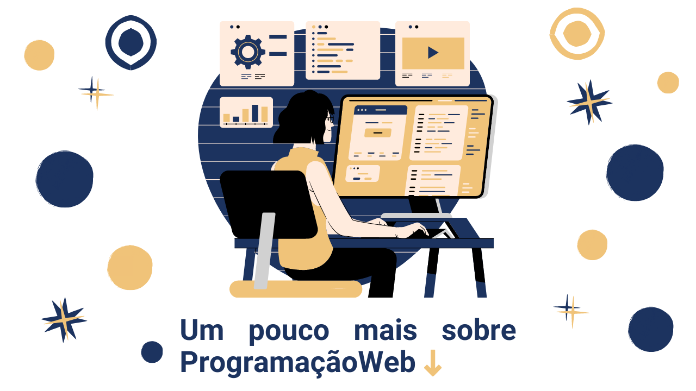

É um editor de código-fonte que é executado na área de trabalho, desenvolvido pela Microsoft, além de ser uma ferramenta leve, é robusta, com suporte à edição de códigos em várias linguagem de programação.
O que são as linguagens voltadas para Web?
São usadas propriamente para o desenvolvimento do entendido como camadas de negócio de apresentação, assim como para a construção da lógica de negócios dos websites, portais, e aplicações web de modo geral.
Comece agora a programar
(Linguagem de Marcação de HiperTexto) é o bloco de construção mais básico da web. Define o significado e a estrutura do conteúdo da web. A primeira publicação foi esboçada por Berners-Lee e Dan Connolly e publicada em 1993 na IETF.
Cascading Style Sheets é um mecanismo para adicionar estilos a uma página web, aplicado diretamente nas tags HTML ou ficar contido dentro das tags. Também é possível, adicionar estilos adicionando um link para um arquivo CSS que contém os estilos.
O JavaScript permite controlar os elementos de uma página em tempo real, sem necessariamente ter que receber os dados ou uma resposta do servidor. Por exemplo, é possível atualizar o conteúdo de uma página web sem precisar recarregá-la por completo ao preencher um formulário.
Quer saber mais?
Conhecer os cursosO futuro da programação!
Agora que já sabemos um pouco sobre de como funciona as linguagens voltadas para a Web, é de se deduzir que a profissão de Programador Web é algo que é muito valioso nos dias de hoje, pois vivemos em uma era onde a tecnologia é essencial e cotidiana.
Temos essa tecnologia incrível atualmente, mas como será que ela vai ser no futuro? É sobre isso que vamos falar agora.
Bom, é de se imaginar que você já ouviu por aí a famosa frase "a inteligência artificial vai substituir a maioria dos trabalhos", e se fosse dito que o futuro do código como conhecemos, é sem código. Isso foi o que uma pesquisa da Gartner, grande empresa de consultoria, chegou como conclusão. De acordo com a pesquisa, até 2024 cerca de 65% dos softwares no mundo serão desenvolvidos a partir de low-code e também no-code.
O que é low-code?
A solução low-code (em tradução literal para português, “baixo código”) é caracterizada pelo desenvolvimento com “pouca programação”. Isso significa que sistemas online permitem que você crie outros sistemas ou aplicativos com uma programação básica. A ideia do low-code é fornecer soluções de transformação digital mais rapidamente, na velocidade que o mercado demanda. Dessa forma, minimizando a quantidade e a complexidade da programação.
Assim, sua organização pode desenvolver soluções que atendam às necessidades do seu negócio de forma mais fácil. E isso pode ser realizado por profissionais de tecnologia ou mesmo de outras áreas, com um conhecimento básico sobre o assunto.
O que é no-code?
No-code (em português, “sem código”) é uma abordagem diferente de desenvolvimento de software, que não requer conhecimentos de programação para construir um aplicativo. Ou seja, a diferença entre o desenvolvimento tradicional e o no-code é que neste não é necessário usar códigos, realizar testes, correção de bugs, etc.
Esse método é mais ágil, intuitivo e acessível, o que faz qualquer um apto à sua utilização. Com isso, os colaboradores de outras áreas do seu negócio, que não são especializados em TI e nem têm conhecimento de linguagens de programação, também conseguem criar aplicativos, alterar aplicativos já existentes ou adicionar funcionalidades.
Daqui 20 anos, como estarão as linguagens voltadas para Web?
Fazendo uma ampla pesquisa sobre qual é a visão dos programadores e outras personalidades no mundo da tecnologia, algo em comum é encontrado, se trata da conclusão de que a programação irá sim continuar fazendo parte do nosso mundo, porém de certa forma mais robótica. A ideia de substituição de pessoas por robôs é mencionada há anos para tantas profissões, para nós não seria diferente, mas sabemos que essa área é sim bastante valorizada e tenho esperança que ainda teremos programadores fazendo seu trabalho mesmo em um mundo tão artificial. Que o futuro da programação é promissor nós sabemos, mas dizer com certeza como será, seria um pouco arriscado já que o mundo está sempre mudando e evoluindo, mas é fato que as linguagens serão mais intuitivas e talvez se deixe os códigos um pouco de lado.
fontes: https://www.umov.me/ | https://olhardigital.com.br